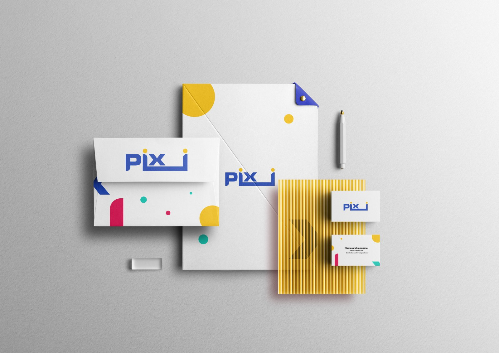
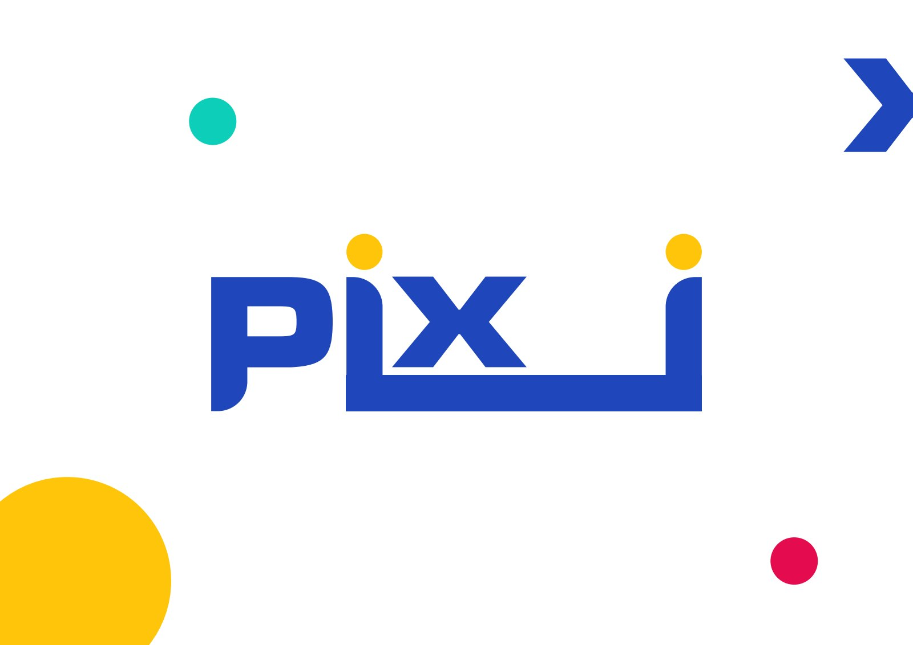
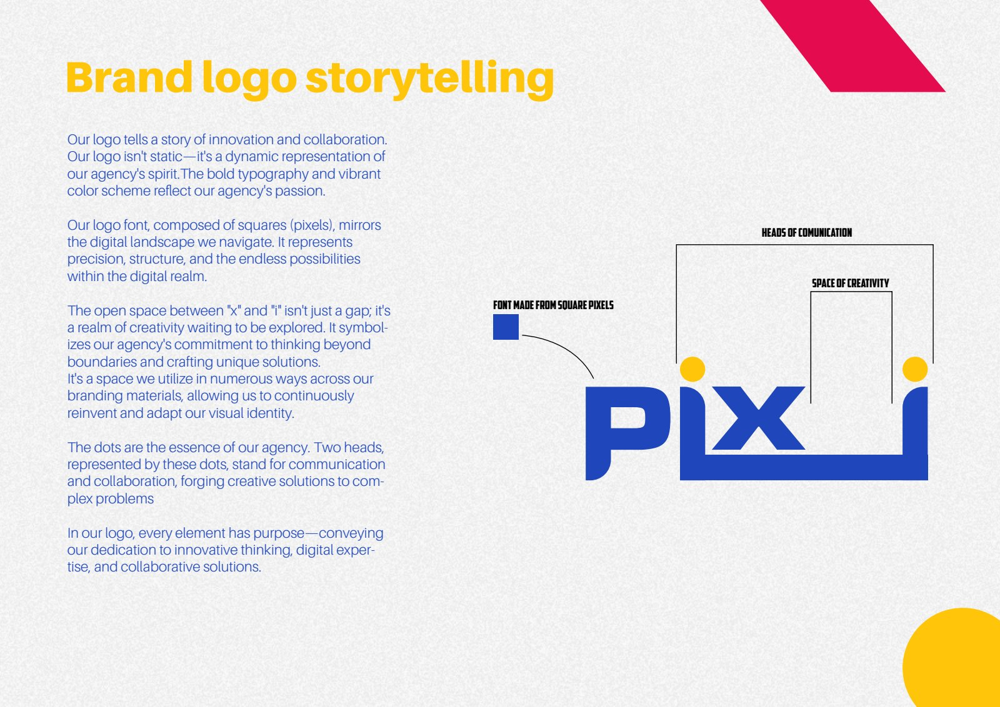
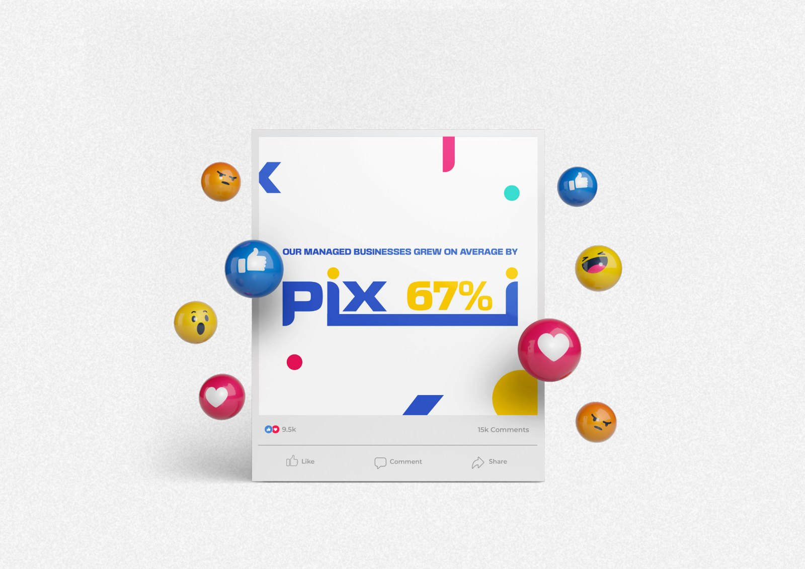
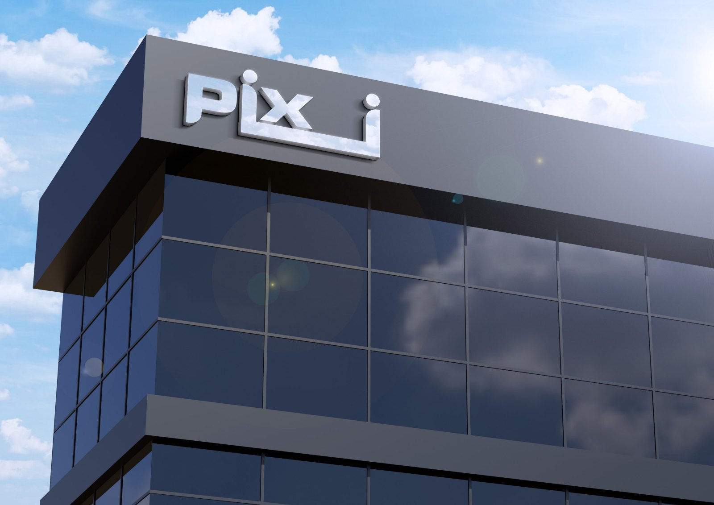

Pixi.
A playful digital identity with room for creativity.

A connected
visual world.
Square-based letterforms connect the identity to pixels and the digital world. The open space within the wordmark creates room for expression, while the dots represent communication and collaboration. Blue anchors a lively palette of yellow, pink and turquoise.
Project scope
- Logo design
- Visual identity system
- Stationery & digital applications



